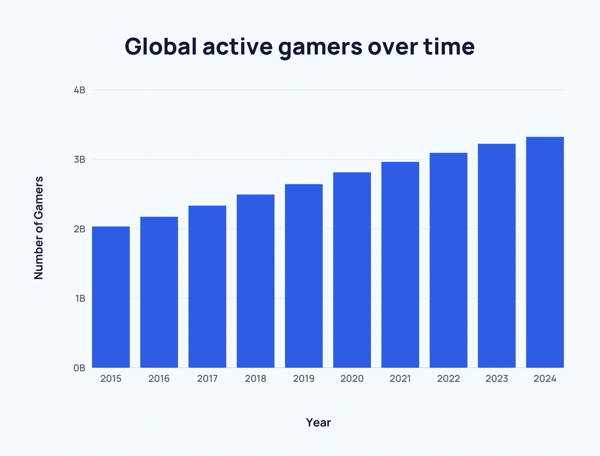
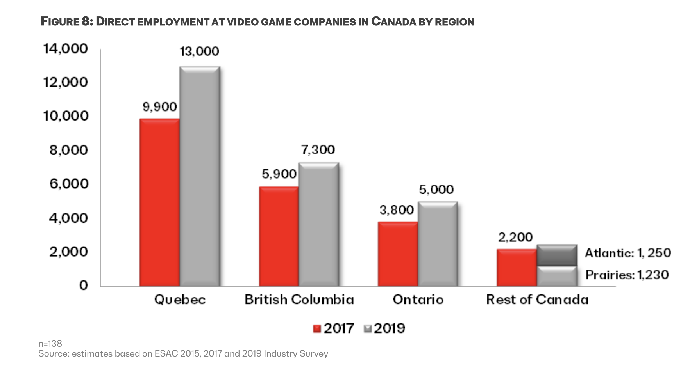
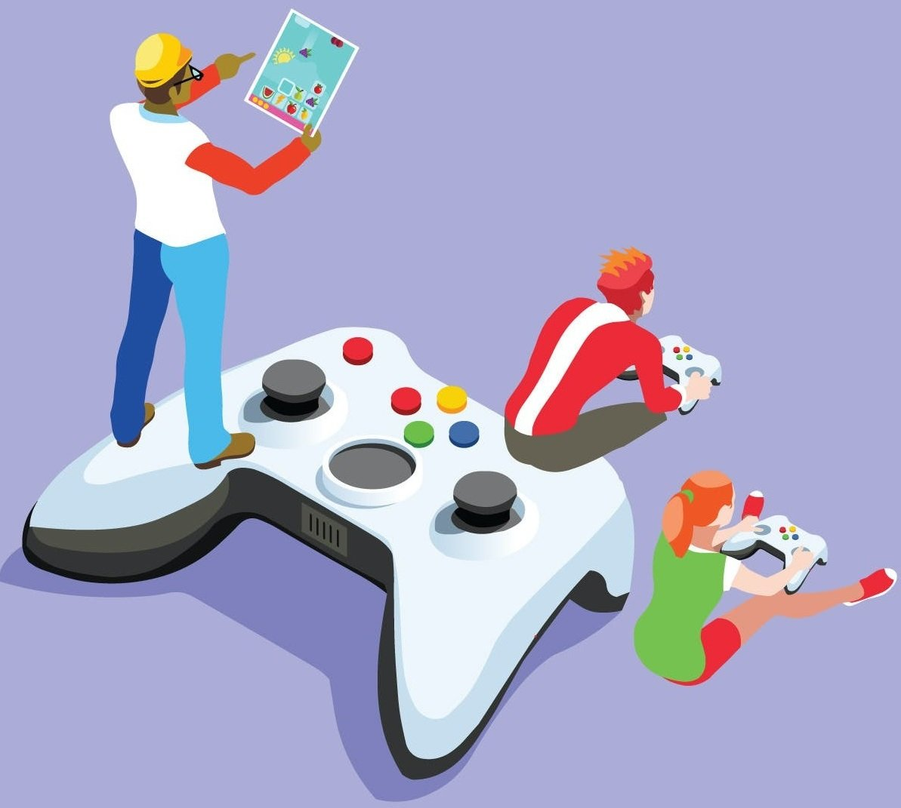

|
The demand for game designers is expected to go up in the future, nationwide and in Canada, and has been rising since 2019. Game designers are also highly in demand all over the world, and this is because more and more people are playing video games these days, and the number will continue to increase considering that kids today are getting technology early in their lives. |
 |
|---|---|
|  |
Globally, there are approximately 3 billion people who play video games, and in Canada, approximately 23 million Canadians play video games, ranging from kids to adults, and that number is expected to grow. Moreover, the gaming industry contributed $5.5 billion to the country’s GDP in 2021 and is expected to continue growing by around 13% from 2024 to 2029. Furthermore, the Government of Canada Job Bank anticipated a labour shortage of game developers in 2031, which means game designers and developers will be even more in demand in the future in Canada. |
|
With this knowledge in mind, I know that the gaming industry will continue to grow, including game designers, and there will be more and more jobs offered. Since there will be many opportunities, I will use them to build up my experience and profile by working for smaller company or client that are easier to get in, and start applying for bigger company and corporations, which is where I wish to work at the end. |
 |